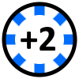
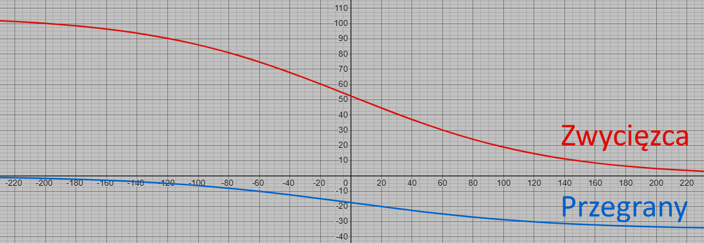

Zasady
Terminologia:
Karty grające - wszystkie karty, które gracze mają w rękach.
Gracz obstawiający - ostatni gracz, który podał układ.
§ - jednostka rankingu graczy
Układ wyższy - układ, który jest dalej w hierarchii.
Układ niższy - układ, który jest wcześniej w hierarchii.
Znak - jeden z: trefl ♣, karo ♦, kier ♥, pik ♠.
Ranga - jedna z: 2, 3, 4, 5, 6, 7, 8, 9, 10, J, Q, K, A.
Karta parzysta - jedna z: 2, 4, 6, 8, 10.
Karta nieparzysta - jedna z: 3, 5, 7, 9.
Figura - jedna z: J, Q, K.
Para - 2 karty tej samej rangi.
Trójka - 3 karty tej samej rangi.
Kareta - 4 karty tej samej rangi.
Full - para i trójka.
Mocny Full - trójka i kareta.
Strit - kolejne karty względem rangi.
Poker - strit w jednym kolorze.
Szlemik - poker od 2 do A.
Szlem - dwa szlemiki.
??? - trzy szlemiki.
Żeton - moneta którą można wymienić na 2 karty.

Cel gry:
Celem gry jest pozostanie ostatnim graczem. Gracz odpada, gdy będzie posiadał tę liczbę żetonów:
4 grających: 5 żetonów
3 grających: 7 żetonów
2 grających: 9 żetonów
Początek gry:
Gra rozpoczyna się od rozdania każdemu graczowi 2 kart i 1 żetonu. Gracz rozpoczynający wybierany jest losowo.
Przebieg gry:
Gracz rozpoczynający obstawia ustawienie które może znajdować się w kartach grających, stając się graczem obstawiającym. Następnie, ma możliwość wymiany żetonu na 2 karty. Każdy kolejny gracz wykonuje jedną z 3 rzeczy: podbicie, sprawdzenie, przeczekanie.
Podbicie:
Podbicie polega na podaniu wyższego układu niż obstawiający gracz. Po podaniu układu gracz może wymienić żeton na 2 karty.
Sprawdzenie:
Sprawdzenie polega na pokazaniu wszystkich kart grających. Jeżeli układ, który podał gracz obstawiający, wystąpił, rozdanie rozpoczyna się od nowa, ale gracz, który sprawdził, ma 1 żeton więcej. Jeżeli ustawienie nie wystąpiło, gracz obstawiający ma 1 żeton więcej.
Przeczekanie:
Przeczekanie może wystąpić tylko, gdy gracz ma na ręku jokera. Gracz może go wyrzucić, co powoduje ominięcie jego kolejki. Kolejny gracz podczas sprawdzania lub podbijania będzie robił to względem gracza obstawiającego.
Blef:
Blef to sytuacja, w której gracz obstawiający podaje ustawienie niezgodne z kartami, które ma na ręku. Przykładowo, gracz rozpoczynający, mając w ręku dziewiątkę i damę, może obstawić najwyższą kartę króla, przez co zmyli innych graczy, którzy będą myśleli, że gracz obstawiający ma w ręku króla. Osoba, która będzie miała króla w ręku, może obstawić parę króli i gracz blefujący będzie mógł ją sprawdzić.
Układy:
W grze występują poniższe układy, ułożone w kolejności od najniższego do najwyższego:
- Najwyższa karta (wymaga podania rangi)
- Para (wymaga podania rangi)
- 2 Pary (wymaga podania rang)
- Kolor 5 (wymaga podania koloru)
- 3 Figury
- 4 Nieparzyste
- 5 Parzystych
- 3 Pary (wymaga podania rang)
- Trójka (wymaga podania rangi)
- Full (wymaga podania rang)
- Strit 5 (wymaga podania najniższej rangi)
- Kolor 7 (wymaga podania koloru)
- 2 Trójki (wymaga podania rang)
- Strit 8 (wymaga podania najniższej karty)
- 3 Trójki (wymaga podania rang)
- 6 Figur
- 8 Nieparzystych
- 10 Parzystych
- Kareta (wymaga podania rangi)
- Mocny Full (wymaga podania rang)
- Strit 13
- 9 Figur
- Kolor 10 (wymaga podania koloru)
- Poker 5 (wymaga podania koloru i najniższej karty)
- 2 Karety (wymaga podania rang)
- 12 Nieparzystych
- 15 Parzystych
- Poker 9 (wymaga podania koloru i najniższej karty)
- 3 Karety (wymaga podaniu rang)
- Szlemik (wymaga podania koloru)
- 16 Nieparzystych
- 20 Parzystych
- Szlem (wymaga podania kolorów)
- Salem (wymaga podania kolorów)
Wyższe ustawienie występuje, gdy gracz poda to samo ustawienie, ale wyższą rangę lub wyższy kolor. Hierarchia rosnąca kolorów to: trefl ♣, karo ♦, kier ♥ pik ♠. Wyższość układu determinuje najwyższa karta, na przykład mając 3 pary J, Q, K wyższym ustawieniem jest 2, 3, A. W Fullu i Mocnym Fullu ważniejsza jest dłuższa ranga, na przykład 3 damy i dwie 2 są wyżej niż 3 walety i dwa asy.
Ranking:
Wygrany gracz zyskuje §, a przegrani tracą §. Oznaczmy ranking gracza jako x. Aby obliczyć nowy ranking gracza x', należy obliczyć średni ranking pozostałych graczy x i podstawić odpowiednio do równania:
Dla gracza wygranego: x'=x+floor(105/(1+exp((x-x)/66))).
Dla gracza przegranego: x'=x-floor(35/(1+exp((x-x)/66))).
Poniższy wykres pokazuję zmianę rankingu (oś pionowa) względem różnicy rankingu początkowego i średniej pozostałych graczy (oś pozioma).

Przykładowo, gracze mieli ranking odpowiednio: 1097§, 1176§, 991§ i 1115§, i wygrał pierwszy gracz. Nowe rankingi to odpowiednio: 1148§, 1147§, 988§, 1094§
Powrót